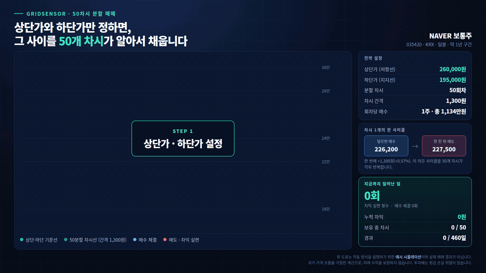

오프라인 참석자 전원 · 1개월 무료 이용
이 강의를 들으시면
AI 재테크를 직접 세팅하고,
매일 익절이 쌓이는 걸
한 달간 직접 경험하시게 될 겁니다.
부자들이 돈을 굴리는 방식을 시스템으로 옮겨놓았습니다.
2시간 동안 그 구조를 전부 열어 보여드립니다.
CHAPTER 01
지금, 재테크 어떻게 하고 계신가요?
아마 이 셋 중 하나에 계실 겁니다.
부동산
남들 다 하는 대로 대출 끼고 들어가려 했는데, 대출 규제와 양도세에 막혀 시작조차 못 하셨거나 —
어렵게 들어갔더니 이번엔 팔리지가 않아 이자만 나가고 계십니다.
주식
다들 벌었다는데, 정작 어떤 종목을 언제 얼마나 사야 할지를 모르겠습니다.
큰맘 먹고 샀더니 떨어지고, 이제는 손해라서 팔지도 못하고 들고만 계십니다.
코인
여기는 더 어렵습니다. 지금 비트코인을 사야 하는지 말아야 하는지조차 판단이 안 섭니다.
오르면 놓친 것 같고, 내리면 더 내릴 것 같습니다.
결국 문제는 하나였습니다
내 기준이 없습니다.
알아도 감정이 먼저 움직입니다.
조금만 떨어지면 불안해서 팔아버리고, 조금 오르면 더 갈까 봐 못 팝니다.
종목을 몰라서가 아니라, 기준이 없어서 매번 같은 자리로 돌아옵니다.
그래서 궁금해졌습니다.
그럼 부자들은 대체 어떻게 하고 있을까?
CHAPTER 02
부자들은 맞히려 하지 않았습니다
직접 만나보고 알게 된 것은, 예상과 완전히 달랐습니다.
그들이 먼저 보는 것
수익률이 아니라
잃을 가능성
"얼마 벌까"보다 "얼마나 잃을 수 있나"를 먼저 계산합니다. 그 계산이 끝나야 움직입니다.
그들이 가진 것
자기만의 기준과
기다릴 줄 아는 태도
남이 판다고 팔지 않습니다. 자기 기준에 닿을 때까지 그냥 기다립니다.
우리는 종목을 맞히려다 잃었고,
그들은 기준을 지키다 벌었습니다.
그래서 결심했습니다.
나도 그 방식을 그대로 따라 하자.
CHAPTER 03
말은 쉬웠지만,
몸으로 아는 데 10년이 걸렸습니다
부동산, 경매, 국내주식, 미국주식, 코인 — 안 해본 게 없습니다.
10년
직접 겪으며 기준을 세우는 데 걸린 시간
100억+
시스템을 다듬으며 거래한 누적 금액
머리로 아는 것과 계좌로 겪는 것은 완전히 다른 일이었습니다.
기준을 세워도 막상 화면 앞에 앉으면 손이 먼저 나갔습니다.
그래서 결론을 내렸습니다 — 이건 사람이 하면 안 되는 일이구나.
기준을 프로그램에 심어놓고, 사람은 손을 떼야 하는 일이었습니다.
CHAPTER 04
부자들의 방식은 결국
다섯 가지로 나누는 것이었습니다
맞히는 능력이 아니라, 나누는 방식이 결과를 만들었습니다.
01
시드 분산
한 번에 넣지 않습니다
02
종목 분산
한 종목에 걸지 않습니다
03
투입 시점 분산
사는 때를 나눕니다
04
투입 금액 분산
한 번에 실리는 돈을 줄입니다
05
익절 분산
파는 때도 나눕니다
대부분은 앞의 네 가지까지만 압니다. 그런데 실제로 계좌를 지키는 건 다섯 번째입니다.
한 번에 다 팔지 않고 조금씩 나눠서 익절하기 때문에, 시장이 어디로 가든 계속 돌아갑니다.
그리고 가장 중요한 것
손절하지 않습니다.
떨어지면 파는 게 아니라, 떨어질 때마다 나눠서 더 담고 평균을 낮춥니다.
그래서 반등이 왔을 때 회복이 아니라 수익이 됩니다.
※ 손절을 하지 않는다는 것은 매매 방식을 뜻하며, 손실이 발생하지 않는다는 의미가 아닙니다.
그런데 여기서 하나가 더 남아 있었습니다.
"어디에서" 나눌 것인가.
CHAPTER 05
돈은 한곳에 머물지 않습니다
금리와 물가가 움직일 때마다, 돈은 자기가 유리한 시장으로 옮겨 다닙니다.
"쌀 때 사서 비쌀 때 판다"는 말은 종목 안에서만 쓰는 말이 아니었습니다.
시장 자체를 옮겨 다니는 것이 돈의 흐름이었습니다.
한 시장에 자산을 묶어두면, 그 시장이 쉬는 동안 내 돈도 같이 쉽니다.
24 / 365
그래서 세 개를 따로 만들었습니다
GridSensor KR
국내주식 · 낮 시간
GridSensor US
미국주식 · 우리가 잠든 밤
GridSensor DT
디지털자산 · 24시간
셋을 함께 쓰면 쉬는 시장이 없습니다.
그리고 시장 상황에 따라 자금을 옮겨 다닐 수 있습니다.
CHAPTER 06
그것을 시스템으로 옮긴 것이
그리드센서입니다
원리는 세 줄이면 끝납니다. 차트를 볼 줄 몰라도 되는 이유입니다.
STEP 01 · GRID
나눕니다
가장 높게 볼 가격과 가장 낮게 볼 가격, 두 개만 정하면 그 사이가 50개 차시로 자동 분할됩니다.
STEP 02 · SENSOR
감지합니다
가격이 각 차시에 닿는 순간 삽니다. 한 칸 위로 오르면 그 차시만 팝니다.
STEP 03 · REPEAT
반복합니다
50개 차시가 각자 이 일을 합니다. 사람의 판단은 한 번도 끼어들지 않습니다.
예를 들어 이렇게 됩니다
예를 들어 네이버 주식을 상단 260,000원 · 하단 195,000원으로 잡고 50차시로 나누면, 차시 간격은 1,300원입니다.
226,200원에 닿으면 그 차시가 사고, 227,500원이 되면 그 차시만 팝니다. 그리고 다시 대기합니다.
50차시로 나눈 각각의 매수와 매도 그리드가 자동으로 일을 하게 되면서 익절을 만듭니다.
앞에서 말씀드린 다섯 가지 분산이 여기서 동시에 일어납니다.

CHAPTER 07
이미 검증된
회원들의 이야기
1년간 내부에서만 조용히 돌려온 시스템입니다.
먼저 써본 분들이 실제로 남긴 운용 기록입니다.

비트코인 · DT
운용 2026.06.10 → 07.23 (43일)
30차시 · 체결 343회
실현손익 211,405원

현대차 · KR
운용 2026.08.04 → 08.16 (12일 · 진행 중)
30차시 · 체결 69회
실현손익 319,580원

NAVER · KR
운용 2026.07.30 → 08.16 (17일 · 진행 중)
50차시 · 체결 118회
실현손익 312,419원

한미반도체 · KR
운용 2026.07.31 → 08.16 (16일 · 진행 중)
50차시 · 체결 106회
실현손익 307,574원

한미반도체 · KR
운용 2026.08.11 → 08.16 (5일 · 진행 중)
50차시 · 체결 67회
실현손익 232,044원

삼성전자 · KR
운용 2026.07.29 → 07.30 (하루)
10차시 · 체결 10회
실현손익 83,041원

NAVER · KR
운용 2026.06.25 → 08.16 (52일 · 진행 중)
10차시 · 체결 11회
실현손익 45,255원

일라이 릴리 · US
운용 2026.07.15 → 08.16 (32일 · 진행 중)
30차시 · 체결 48회
실현손익 $952.31

일라이 릴리 · US
운용 2026.07.27 → 08.16 (20일 · 진행 중)
30차시 · 체결 54회
실현손익 $826.72

마이크로소프트 · US
운용 2026.05.21 → 07.31 (71일)
10차시 · 체결 20회
실현손익 $335.78

엔비디아 · US
운용 2026.07.15 → 08.16 (32일 · 진행 중)
20차시 · 체결 25회
실현손익 $313.87

애플 · US
운용 2026.05.15 → 07.27 (73일)
40차시 · 체결 87회
실현손익 $310.59

마이크로소프트 · 적립형 · US
운용 2026.07.21 → 07.30 (9일)
주 5회 · 총 5주 정기매수 후 전량 매도
실현손익 $281.73 (+14.41%)

마이크로소프트 · 적립형 · US
운용 2026.05.28 → 07.30
주 1회 · 총 6주 정기매수 후 전량 매도
실현손익 $275.40 (+11.83%)

SK하이닉스(ADR) · US
운용 2026.07.10 → 07.23 (13일)
20차시 · 체결 4회
실현손익 $62.62
큰 한 방이 아닙니다.
닿을 때마다 작게 익절한 것이 쌓인 결과입니다.
※ 위 화면은 실제 이용자의 운용 기록이며, 개인정보는 가린 상태로 게시합니다. 종목 · 운용기간 · 차시 · 체결 횟수를 함께 표기했습니다. 모든 수치의 기준일은 2026년 8월 16일이며, '진행 중' 전략은 이후 수치가 달라질 수 있습니다.
※ 과거의 성과이며 미래의 수익을 보장하지 않습니다. 동일한 설정이라도 시장 상황 · 시드 규모 · 종목 · 운영 방법에 따라 결과는 달라집니다.
※ 표기된 금액은 해당 전략의 실현손익이며, 투입 원금 대비 수익률이나 연 환산 수익률을 의미하지 않습니다.
※ 모든 매매는 이용자 본인 계좌 · 본인 자금으로 이루어지며, 투자에는 원금 손실 위험이 있습니다.
CHAPTER 08
여기까지 읽으셨다면
아마 이런 생각이 드실 겁니다
당연한 의문입니다. 저도 그 질문부터 시작했습니다.
"이렇게 간단한데, 왜 다들 안 하죠?"
→ 1년간 내부에서만 검증하며 운영하다 이번에 처음 공개합니다.
아직 아는 분이 거의 없습니다. 그만큼 지금 오시는 분이 가장 빠른 자리입니다
"손절을 안 하면, 계속 보유만 하고 있는 거 아닌가요?"
→ 그냥 들고만 있는 게 아니라, 매일매일 사고팔며 움직이고 있다는 걸 화면으로 보여드립니다
"상단·하단은 대체 어디에 그어야 하나요?"
→ 실제 종목 차트를 띄워놓고 기준을 잡아 보입니다
"그래서, 진짜 익절이 쌓이긴 하나요?"
→ 지금 돌아가고 있는 계좌를 그 자리에서 열어 보여드립니다
이 네 가지는 글로는 안 됩니다.
원칙을 지키며 돌아가는 화면을
직접 공개해 드립니다.
CHAPTER 09
왜 굳이 오프라인만 고집할까요
온라인으로 열면 훨씬 많은 분이 오실 텐데도, 그렇게 하지 않는 이유가 있습니다.
이 시스템은 아무에게나 드리고 싶지 않습니다.
단순한 프로그램 하나로만 생각하고 제대로 된 교육 없이 시작하시면,
서로 시간 낭비입니다.
소중한 본인 자산으로 재테크를 하면서
아무 공부도 하지 않고 "알아서 프로그램이 돈을 벌어다 준다"?
그런 게 있으면 저에게도 소개해 주십시오.
그렇게 홍보하는 곳들은 대개 고객의 자산이 불어나는 데는 관심이 없고,
자기 수익만 챙기려는 구조인 경우가 많습니다.
그래서 시간을 내어 오프라인 강의를 직접 들으시는 분께만 기회를 드리려고 합니다.
그래서 오신 분께만 드립니다.
CHAPTER 10
강의만 들으려고 오지 마세요.
부자의 돈 버는 방식을
그대로 복제하고 싶은 분만 오세요
특강에 오신 분 전원께 그리드센서 1개월 이용을 무료로 드립니다.
바로 쓰고 싶으시면 준비해 주세요
한국투자증권 계좌와 빗썸 · 업비트 · 코인원 중 1개 계좌를
미리 개설해 두시면 훨씬 빨리 이용하실 수 있습니다.
자세한 이용 조건은 특강 현장에서 안내해 드립니다.
※ 1개월 무료는 프로그램 이용료가 면제된다는 뜻이며, 매매는 본인 계좌·본인 자금으로 이루어집니다.
투자 판단과 결과에 대한 책임은 투자자 본인에게 있습니다.
CHAPTER 11
이런 분은 오시지 않는 게 낫습니다
서로의 시간을 아끼기 위해 솔직하게 말씀드립니다.
NO. 01
단기간에 큰 수익을 원하시는 분
도박을 원하시면 잘못 찾아오셨습니다. 정상적인 방법으로 재테크하시길 권해 드립니다.
NO. 02
대신 굴려주길 원하시는 분
운영 대행을 하지 않습니다. 자금은 본인 계좌에 그대로 있고, 설정도 본인이 합니다.
NO. 03
종목을 찍어주길 원하시는 분
종목 추천은 하지 않습니다. 고르는 기준을 알려드립니다.
NO. 04
연평균 수익률이 궁금하신 분
수익률 자체를 언급할 수 없습니다. 시드 · 종목 · 전략 세팅 · 운영 방법에 따라 개인마다 모두 다릅니다.
진행
오프라인 강연 2시간
개인 계좌 세팅 실습은 없습니다
준비물
필기구 · 스마트폰
그 외 따로 준비하실 것은 없습니다
참석 특전
그리드센서 1개월 이용
오신 분께 현장에서 안내드립니다
· 자리가 한정되어 있어 신청 순서대로 마감됩니다.
· 부득이 못 오시게 되면 하루 전까지 알려주세요. 기다리시는 분께 자리를 드립니다.
· 일시 · 장소 · 참가비 · 환불 규정은 강의 신청 안내에 표기되어 있습니다.
10년이 걸린 이야기를
2시간에 담았습니다.
듣고 나서 한 달 동안 직접 확인해 보시면 됩니다.
믿으라고 하지 않겠습니다.
아래 신청하기 버튼으로 자리를 확보해 주세요
그리드센서는 시스템 제공업자로 거래 당사자가 아니며, 종목 추천 · 수익 보장 · 운영 대행을 하지 않습니다.
본 특강에서 소개되는 내용은 투자 권유가 아니며, 모든 투자의 최종 판단과 책임은 투자자 본인에게 있습니다.
투자에는 원금 손실 위험이 있습니다.
(주)모멘타 · 대표 안영신 · 사업자등록번호 599-88-01147 · 070-4066-4008